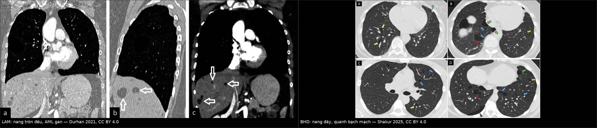
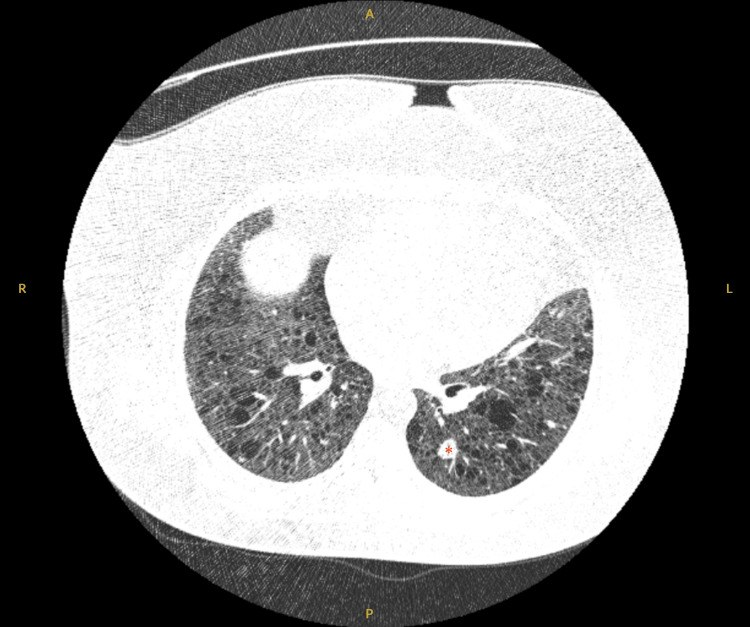
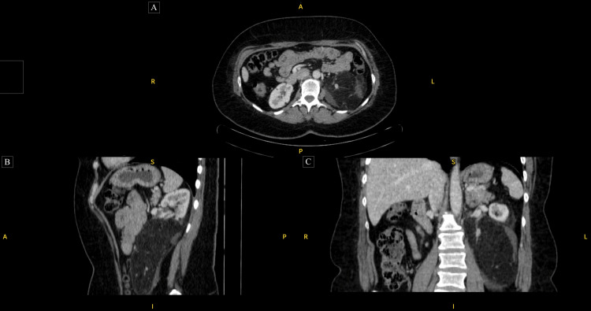
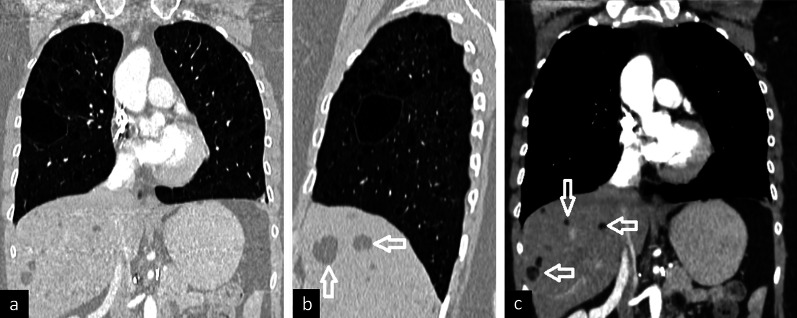

696 — LAM (lymphangioleiomyomatosis): nang phổi lan toả ở nữ tuổi sinh sản, VEGF-D & sirolimus
Tags: pattern:nang-phoi vung:phoi anatomy:quanh-mach protocol:HRCT score:VEGF-D-800 incidentaloma:nang-phoi
Mức chắc chắn (certainty): tổng hợp y văn (literature synthesis) — tự biên từ khuyến cáo Hội Lao và Bệnh phổi Brazil 2025 (PMC11796567), bài tổng quan ảnh bệnh phổi bẩm sinh ở người lớn (PMC8557233) và loạt ca LAM 2025 (PMC12318564); không gắn một ca nguyên văn duy nhất cho toàn bài, nhưng phần quiz dùng ca nguyên văn của Conti 2025 và Durhan 2021 (ghi nguồn từng ảnh).
1. Tổng quan bệnh học – cơ chế hình ảnh
- Bản chất: LAM (lymphangioleiomyomatosis) là u tăng sinh mô mềm mức độ thấp (low-grade neoplasm) có tiềm năng di căn, đặc trưng bởi tăng sinh tế bào cơ trơn không điển hình (LAM cells) quanh mạch máu, mạch bạch huyết và đường thở, gây ra nang phổi lan toả (PMC11796567). Đây không phải bệnh viêm — đây là bệnh tân sinh, nên ức chế mTOR là điều trị đặc hiệu, không phải chống viêm.
- Dịch tễ: 3–5 ca/triệu phụ nữ (ước tính của LAM Foundation); nghiên cứu 4 nước châu Âu gần đây cho 23,5 ca/triệu phụ nữ trưởng thành — cao hơn nhiều vì CT ngực được chỉ định rộng rãi hơn (PMC11796567). Xơ cứng củ (tuberous sclerosis complex — TSC) có tỉ lệ 1/5.000–10.000 ca sinh; 26–50% phụ nữ TSC có LAM phổi — 27% ở người dưới 21 tuổi, tăng tới 80% ở người trên 40 tuổi; ở nam TSC, nang phổi gặp 10–38% nhưng hiếm khi có triệu chứng. Thời gian từ khởi triệu chứng đến chẩn đoán 3–5 năm, thường ở thập niên 3–4 (PMC11796567).
- Di truyền – cơ chế phân tử: mất chức năng TSC1/TSC2 → mTORC1 tăng hoạt liên tục → LAM cell tăng sinh, tăng sinh mạch bạch huyết và phá huỷ vách phế nang nhờ metalloproteinase. Ở LAM lẻ tẻ (sporadic LAM), đột biến TSC1/TSC2 xuất hiện trong chính tế bào LAM (đột biến soma), nên bệnh vẫn đáp ứng sirolimus dù không có TSC toàn thân (PMC11796567).
- Biểu hiện lâm sàng (dùng để nhận ra trên phim):
- Khó thở khi gắn sức — triệu chứng chính, tiến triển âm thầm.
- Tràn khí màng phổi tự phát 30–50% trong suốt bệnh trình, tái phát tới 70% (đây là cách vào viện hay gặp nhất ở nữ trẻ) (PMC11796567).
- Tràn dịch dưỡng trấp (chylothorax) 10–30%, ho ra máu 20%, dưỡng trấp đàm/tiểu/ổ bụng.
- U cơ mỡ mạch thận (renal angiomyolipoma — AML) khoảng 50% ca LAM (30–40% ở LAM lẻ tẻ, 90% ở LAM-TSC) — thường hai bên, nhiều ổ, có mỡ; nguy cơ chảy máu khi ≥ 4 cm hoặc vi phình mạch ≥ 5 mm (PMC11796567).
- U cơ trơn bạch mạch (lymphangioleiomyoma) vùng chậu – sau phúc mạc, có thể gây đau/chèn ép.
- TẠI SAO tạo nang (mô bệnh → hình ảnh): LAM cell phủ quanh tiểu phế quản → hẹp lòng kiểu van một chiều → khí bị giữ lại; đồng thời men phân huỷ phá vách phế nang → các khoang khí hợp nhất thành nang tròn, thành rất mỏng (< 2 mm). Vì tổn thương rải rác theo trục phế quản–mạch và màng phổi chứ không theo vách liên tiểu thùy, nang LAM phân bố lan toả, đối xứng, không ưu thế vùng — đây là chốt hình ảnh phân biệt với BHD (nang ưu thế đáy, quanh bạch mạch) và PLCH (nang đỉnh–giữa, kèm nốt) (PMC11796567, PMC8557233).
- TẠI SAO trông như vậy trên CT (vật lý): khí trong nang ≈ −1.000 HU, **thành nang là mô liên kết mỏng < 2 mm nhưng vẫn thấy được** — khác **khí phế thũng** (thành không xác định) và khác **bóng khí (bulla)** (thường > 1 cm, đỉnh phổi, thành rất mỏng, không có nang khắp phổi). Nhu mô xen giữa các nang bình thường; thể tích phổi bình thường hoặc tăng (không xẹp) (PMC11796567).
- Dấu hiệu phối hợp trên CT: nốt kính mờ vi mô đa ổ (multifocal micronodular pneumocyte hyperplasia — MMPH) — nốt đặc/kính mờ 2–14 mm, phân bố ngẫu nhiên (đặc biệt TSC-LAM) — dễ đọc nhầm thành lao kê/di căn (PMC11796567, PMC12318564); AML gan/thận với mỡ −20 đến −100 HU; tràn dịch dưỡng trấp tỉ trọng dịch cao; hạch/dịch dưỡng trấp sau phúc mạc.
- Ngưỡng định lượng bắt buộc (dùng trong quyết định):
- Số nang: ≥ 4 nang đã đủ để đi tìm bệnh nang lan toả; 4–10 nang là ngưỡng nghi LAM ở nữ có bệnh cảnh phù hợp (PMC11796567).
- VEGF-D (vascular endothelial growth factor-D) huyết thanh ≥ 800 pg/mL: độ đặc hiệu gần 100% cho LAM, có thể bỏ sinh thiết phổi khi đã có HRCT điển hình (PMC11796567).
- Tốc độ giảm FEV₁: 47–135 mL/năm; giảm nhanh hơn ở LAM lẻ tẻ, VEGF-D cao, nang nhiều (PMC11796567).
- Chỉ định sirolimus (mTOR inhibitor): FEV₁ ≤ 70% dự đoán, giảm FEV₁ ≥ 90 mL/năm, hoặc giảm oxy máu khi nghỉ/gắng sức; cân nhắc khi tràn khí tái phát; AML ≥ 4 cm; u bạch mạch/dịch dưỡng trấp có triệu chứng (PMC11796567).
- Ghép phổi: FEV₁ < 30%, giảm oxy khi nghỉ, NYHA III–IV, hoặc suy giảm chức năng dù đã điều trị (PMC11796567).
2. Mẫu hình + chẩn đoán phân biệt theo vị trí (gamut)
- Mẫu hình chốt: nữ tuổi sinh sản, nhiều nang tròn–bầu dục, thành mỏng đều < 2 mm, lan toả hai bên, đối xứng, không ưu thế vùng, nhu mô xen giữa bình thường, thể tích phổi bình thường/tăng.
- Gamut theo phân bố nang (bệnh nang lan toả ở người lớn):
- Lan toả, đối xứng, tròn đều: LAM; di căn phổi dạng nang ( squamous/sarcoma — thường ít nang, thành dày hơn, có nốt đặc).
- Đáy + dưới màng phổi/cạnh trung thất, hình bất quy tắc, nang lớn nhất ≥ 2,1 cm: BHD/FLCN (bài 697) — không có AML thận kiểu LAM (BHD có u thận thể chromophobe/oncocytoma, không mỡ).
- Đỉnh – giữa phổi, hình kỳ quái, kèm nốt/GGO, người hút thuốc: PLCH (Langerhans cell histiocytosis).
- Dọc phế quản–mạch, có GGO/nốt, bệnh tự miễn (Sjögren), HIV: LIP (lymphoid interstitial pneumonia).
- Vài nang ở người già, đáy, thành mỏng, không triệu chứng: nang do lão hoá — không chẩn đoán bệnh nang lan toả.
- Gamut theo bối cảnh lâm sàng: nữ trẻ tràn khí tái phát + nang lan toả → LAM; động kinh/chậm phát triển + u da + nang phổi → TSC-LAM; AML thận hai bên có mỡ → gần như chốt LAM/TSC; tràn dịch dưỡng trấp → LAM (hoặc lymphoma/sarcoid — nhưng không có nang điển hình).
- Mnemonic "LAM = Large Air spaces, All zones, Middle-aged women": nang Lớn–All zones–Middle-aged women; đối lập với BHD = Bottom, Hilar, Diverse và PLCH = Peak, Nodules, Smoker.
3. Bảng so sánh phân biệt (ma trận đối chiếu)
| Thực thể (entity) | Hình ảnh điển hình (HRCT) | Chốt vào (rule-in) | Chốt loại (rule-out) | Gợi ý xác nhận |
|---|---|---|---|---|
| LAM | Nang tròn đều, thành < 2 mm, lan toả đối xứng mọi vùng; nhu mô xen giữa bình thường; thể tích phổi ↑; có thể MMPH, AML | Nang lan toả đối xứng + AML thận có mỡ + VEGF-D ≥ 800 pg/mL | Nang dẹt/bất quy tắc ưu thế đáy hoặc nang lớn nhất ≥ 2,1 cm → nghĩ BHD; nang kèm nốt đỉnh → PLCH | VEGF-D, CT bụng (AML), HMB-45 nếu sinh thiết; TSC1/TSC2 |
| BHD/FLCN (bài 697) | Nang ưu thế đáy, dưới màng phổi – cạnh trung thất – dọc vách liên tiểu thùy, hình bất quy tắc, kích thước rất khác nhau; tĩnh mạch xuyên nang | Nang lớn nhất ≥ 2,1 cm (Se 99%, Sp 82%) + phân bố quanh bạch mạch (chính xác 97%) | Nang tròn đều lan toả đối xứng → LAM; có AML mỡ → LAM/TSC | Xét nghiệm FLCN; khám da; MRI thận |
| PLCH | Nang đỉnh–giữa, hình kỳ quái, thành không đều, kèm nốt/GGO; nang tồn tại khi nốt mất | Nang kỳ quái vùng đỉnh + nốt + hút thuốc | Nang đáy, không nốt → BHD; nang đối xứng tròn → LAM | HRCT, ngừng thuốc lá, sinh thiết (CD1a/Langerin) |
| LIP | Nang thưa, dọc phế quản–mạch và dưới màng phổi, có vách trong nang, kèm nốt/GGO | Nang + GGO + nốt quanh trục mạch + bệnh tự miễn | Không GGO, không nốt, nang đáy → BHD | Bệnh tự miễn (Sjögren), HIV, sinh thiết |
| Di căn phổi dạng nang | Ít nang, thành dày không đều, nốt đặc đi kèm, thường đáy/ngoại vi | Tiền sử ung thư + nốt đặc + nang thành dày | Nang thành mỏng đều, hàng trăm nang → LAM | So phim cũ, PET/CT, sinh thiết |
| Nang do lão hoá | Vài nang, không đạt ngưỡng 4–10, ở đáy, thành mỏng, nhu mô bình thường, không triệu chứng | Tuổi cao + ít nang + không tiến triển | Nang lan toả, nhiều nang, tiến triển → bệnh nang thật | So phim cũ 12–24 tháng |

Trái: LAM — nang tròn đều lan toả, kèm AML gan (mũi tên) trên thì trước tiêm. Phải: BHD — nang ưu thế đáy, phân bố quanh bạch mạch, hình dạng rất khác nhau. Nguồn: Durhan G et al., Insights into Imaging 2021 (PMC8557233) Fig. 7, CC BY 4.0; Shakur A et al., Insights into Imaging 2025 (PMC12328879) Fig. 3, CC BY 4.0. Ảnh ghép letterbox, không crop.Ba dấu hiệu quyết định trên một lát cắt
- Phân bố: LAM mọi vùng — BHD đáy — PLCH đỉnh.
- Hình dạng: LAM tròn đều, cùng cỡ — BHD bất quy tắc, khác cỡ — PLCH kỳ quái, thành không đều.
- Nhu mô xen giữa: LAM bình thường (hoặc MMPH thưa) — BHD bình thường — PLCH/LIP có nốt/GGO.
4. Protocol chụp + hệ phân độ/điểm chuẩn hoá
- HRCT ngực (lát 1 mm, cửa sổ phổi): không cần cản quang; chụp thì hít vào tối đa; dựng MIP đảo (minIP) coronal để đếm nang và thấy phân bố; ghi số nang ước tính, đường kính nang lớn nhất (mm), phân bố (đáy/giữa/đỉnh), % nhu phổi bị thay thế (PMC11796567).
- CT/MRI bụng: bắt buộc tìm AML thận ở mọi ca LAM mới — mỡ −20 đến −100 HU trong khối thận là chốt; đo đường kính lớn nhất và tìm vi phình ≥ 5 mm để quyết định can thiệp (PMC11796567).
- Xét nghiệm máu: VEGF-D trước mọi sinh thiết; ≥ 800 pg/mL + HRCT điển hình → chẩn đoán xác định, không cần mô học (PMC11796567).
- Mô học (khi VEGF-D thấp/HRCT không điển hình): sinh thiết phổi qua nội soi lồng ngực (VATS) ưu tiên hơn sinh thiết xuyên phế quản; dấu HMB-45 là chuẩn vàng (độ đặc hiệu cao, độ nhạy thay đổi nếu mẫu nhỏ) (PMC11796567).
- Đánh giá chức năng & biến chứng: hô hấp ký + DLCO mỗi 3–6 tháng năm đầu, sau đó 6–12 tháng; ngay lần đầu, DLCO giảm ở 40–60%, air trapping 40–50%, rối loạn tắc nghẽn 30–50%; 6MWT; siêu âm tim tìm tăng áp lực động mạch phổi (≤ 10%, thường nhẹ); CT/MRI bụng theo dõi AML (PMC11796567).
- Điều trị sirolimus: khởi đầu 1–2 mg/ngày, đo nồng độ thuốc sau 2 tuần, hằng tháng trong 3 tháng, sau đó mỗi 3 tháng; dùng liên tục, không ngừng khi ổn định (ít nhất đến mãn kinh) vì ngừng thuốc → FEV₁ giảm lại; everolimus khi không dung nạp (PMC11796567).
- Thai kỳ: bệnh có thể tiến triển (FEV₁ trung bình 77% → 64% sau sinh); nếu bệnh nặng, cân nhắc sirolimus liều thấp ≤ 1 mg/ngày từ quý 2 (PMC11796567).
- AML thận: can thiệp khi ≥ 4 cm, phình mạch ≥ 5 mm, tăng sinh mạch hoặc có triệu chứng — nút mạch (embolization) hoặc sirolimus (giảm 53% thể tích sau 12 tháng) (PMC11796567).
- Sơ đồ quyết định:
flowchart TD
A[Nữ trẻ: nang phổi lan toả hoặc tràn khí tái phát] --> B[HRCT lát 1 mm + minIP]
B --> C{Nang tròn đều, lan toả, thành dưới 2 mm?}
C -->|Không| D[Xét BHD, PLCH, LIP, di căn nang, nang lão hoá]
C -->|Có| E[VEGF-D + CT bụng tìm AML + hỏi TSC]
E --> F{VEGF-D ≥ 800 hoặc có AML mỡ hoặc TSC?}
F -->|Có| G[Chẩn đoán xác định LAM - không cần sinh thiết]
F -->|Không| H[Sinh thiết phổi VATS: HMB-45]
G --> I{FEV1 ≤ 70% hoặc giảm ≥ 90 mL/năm hoặc giảm oxy?}
I -->|Có| J[Sirolimus 1-2 mg/ngày + theo dõi nồng độ]
I -->|Không| K[Theo dõi 3-6 tháng + tư vấn tránh thai/không hút thuốc]
J --> L{AML ≥ 4 cm hoặc vi phình ≥ 5 mm?}
K --> L
L -->|Có| M[Nút mạch hoặc sirolimus, theo dõi CT bụng]
L -->|Không| N[Theo dõi định kỳ; ghép phổi khi FEV1 dưới 30%]
5. Biến thể bình thường và cạm bẫy
- "Vài nang" ở người lớn không phải LAM: nang do lão hoá thường vài nang, ở đáy, thành mỏng, không tiến triển; chỉ ≥ 4 nang mới đáng đi tìm bệnh nang lan toả, 4–10 nang là vùng nghi ngờ (PMC11796567).
- Nhầm LAM với BHD — sai lầm hay gặp nhất: BHD nang ưu thế đáy, dẹt/bất quy tắc, lớn nhất ≥ 2,1 cm, có tĩnh mạch xuyên nang; LAM nang tròn đều mọi vùng (bài 697).
- MMPH đọc nhầm thành lao kê/di căn: nốt kính mờ vi mô rải rác, không triệu chứng nhiễm trùng, kèm nang LAM — đừng điều trị lao theo nốt (PMC12318564).
- Kính mờ trong LAM không phải viêm phổi: có thể do ứ dưỡng trấp/phỳ mạch bạch huyết hoặc xuất huyết phế nang — đọc kèm bối cảnh, không dùng kháng sinh mù (PMC11796567).
- Tràn dịch dưỡng trấp bị gọi là mủ/lao: dịch đục như sữa, triglyceride cao, cấy âm; ở nữ có nang phổi, nghĩ LAM ngay.
- Bỏ sót AML "mỡ nghèo" (fat-poor): AML thể mỡ nghèo có thể giống RCC; cần MRI (mỡ vi mô mất tín hiệu trên fat-sat) và theo dõi — không sinh thiết mù khối thận giàu mạch.
- Tràn khí sau bay: nguy cơ tràn khí ở nữ LAM cao gấp 3 lần sau chuyến bay — tư vấn trước khi đi máy bay, đặc biệt khi đã từng tràn khí (PMC11796567).
- Thai kỳ: không coi là chống chỉ định tuyệt đối, nhưng chức năng phổi giảm sau sinh — cần theo dõi sát và hội chẩn trước khi mang thai.
- "Nang + tràn khí" ở nam giới: LAM gần như chỉ gặp ở nữ (trừ TSC); nam có nang + tràn khí → nghĩ BHD trước tiên.
6. Tự lượng giá — Blind Quiz
Ca 1 — Bệnh nhân nữ có nang phổi lan toả, HRCT dưới đây.

- Gợi ý lâm sàng: nữ, không hút thuốc, không sốt; bài gốc không nêu chi tiết ngoài hình ảnh.
- Câu hỏi: mô tả nang (số lượng, thành, phân bố)? 3 chẩn đoán phân biệt? Hai xét nghiệm ít xâm lấn nhất để chốt?
Bấm để hiện đáp án (findings + chẩn đoán)
- Dấu hiệu: hàng chục nang thành mỏng (< 2 mm), tròn đều, lan toả hai bên, nhu mô xen giữa bình thường; có nốt kính mờ vi mô ở thùy dưới trái (dấu
*) — MMPH. - Chẩn đoán: LAM — nang tròn đều lan toả; ở nữ có tràn khí tái phát thì càng điển hình.
- Phân biệt: BHD (nang đáy, bất quy tắc, lớn ≥ 2,1 cm), PLCH (nang đỉnh + nốt, người hút thuốc), LIP (nang dọc trục mạch + GGO).
- Chốt: VEGF-D huyết thanh ≥ 800 pg/mL (đặc hiệu gần 100%) + CT bụng tìm AML — nếu đủ thì không cần sinh thiết.
- Nguồn ảnh: Conti L et al., Cureus 2025 (PMC12318564) Fig. 2, CC BY 4.0.
Ca 2 — Cùng loạt ca, CT bụng của một bệnh nhân LAM. Ảnh dưới đây.

- Gợi ý lâm sàng: khối thận trái lớn, tình cờ phát hiện khi chụp bụng.
- Câu hỏi: đậm độ khối? Chẩn đoán? Ngưỡng nào phải can thiệp? Vì sao khối này củng cố chẩn đoán phổi?
Bấm để hiện đáp án (findings + chẩn đoán)
- Dấu hiệu: khối lớn thận trái, đậm độ hỗn hợp có vùng mỡ (thấp hơn mô mềm, âm HU), bờ không đều, không xâm lấn tĩnh mạch thận rõ — AML.
- Chẩn đoán: AML thận trong bệnh cảnh nang phổi → LAM/TSC; AML có mỡ cho phép chẩn đoán bằng hình ảnh, không cần sinh thiết.
- Ngưỡng can thiệp: ≥ 4 cm, vi phình ≥ 5 mm, tăng sinh mạch hoặc có triệu chứng → nút mạch hoặc sirolimus.
- Vì sao củng cố: AML thận gặp ở tới 50% ca LAM và là tiêu chuẩn ngoài phổi giúp chốt chẩn đoán khi HRCT điển hình.
- Nguồn ảnh: Conti L et al., Cureus 2025 (PMC12318564) Fig. 3, CC BY 4.0.
Ca 3 — Nữ 32 tuổi, khó thở nhẹ, CT ngực coronal dưới đây. Chẩn đoán và vì sao KHÔNG phải BHD?

- Gợi ý lâm sàng: chưa tràn khí, chưa sinh thiết, đang chờ kết quả VEGF-D.
- Câu hỏi: mô tả nang và hai ổ giảm đậm độ ở gan? Dấu hiệu nào loại BHD? Bước tiếp theo?
Bấm để hiện đáp án (findings + chẩn đoán)
- Dấu hiệu: nang thành mỏng lan toả, tròn đều, mọi vùng (a, b); trên cửa sổ bụng (c) có nhiều ổ mỡ trong gan (mũi tên) — AML gan.
- Chẩn đoán: LAM (nang lan toả + AML gan). BHD bị loại vì nang BHD ưu thế đáy, dẹt/bất quy tắc, lớn nhất ≥ 2,1 cm, và BHD không có AML mỡ (u thận của BHD là chromophobe RCC/oncocytoma, không mỡ).
- Bước tiếp theo: VEGF-D; nếu < 800 → sinh thiết phổi VATS (HMB-45); đồng thời đo chức năng hô hấp để quyết định sirolimus.
- Nguồn ảnh: Durhan G et al., Insights into Imaging 2021 (PMC8557233) Fig. 7, CC BY 4.0.
Bài liên quan chéo
- 697 – Hội chứng Birt–Hogg–Dubé (FLCN) — đối cực "nang đáy" của LAM
- 698 – Nang phổi bẩm sinh CPAM/CCAM — nang một thùy ở trẻ, không phải bệnh nang lan toả
- 601 – Tràn khí màng phổi tự phát ở trẻ lớn & vị thành niên — xử trí tràn khí, ngưỡng tái phát
- 156 – Hội chứng di truyền u thận (VHL, BHD, TSC…) — TSC và AML hai bên
- 150 – Nang thận & phân độ Bosniak — phân biệt nang thận với AML
- 079 – Tràn dịch dưỡng trấp (chylothorax): TG 110 & lymphangiography — tràn dịch dưỡng trấp 10–30% trong LAM
- 050 – Giãn phế quản & kén khí — nang vs kén khí vs khí phế thũng
Ảnh
- Tên file theo quy ước
NNN_slug_Modality_SourceID.jpg; nguồn + giấy phép từng ảnh ởimages/CREDITS.md. - Cả 3 ảnh gốc và ảnh ghép đều CC BY 4.0 — không crop, giữ nguyên mũi tên/dấu của tác giả.
Không dùng để chẩn đoán độc lập khi chưa có người hướng dẫn.